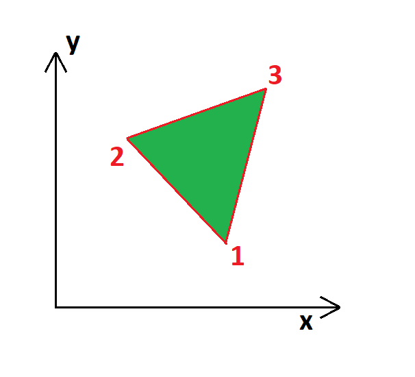
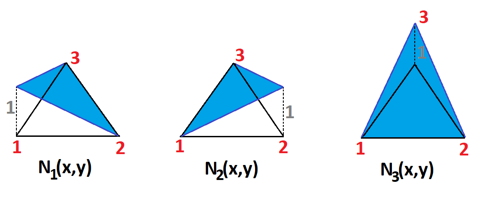

Diskretizaci 2D kontinua provádíme pomocí rovinných elemntů, které mají geometricky jednoduchý tvar. Většinou se používají přímočaré nebo křivočaré polygony z nichž nejjednodušší je trojúhelník. Definujme trojúhelníkový element prostřednictvím tří lokálních uzlů 1 2 3, které jsou umístěny v jeho vrcholech. Poloha uzlů je jednoznačně určena pomocí souřadnic [x1, y1], [x2, y2], [x3, y3], viz obrázek níže.
Složky posunu ve vodorovném a svislém směru, lze interpolovat funkcemi:
\[u(x,y) = \alpha_{1} + \alpha_{2}x + \alpha_{3}y\] \[v(x,y) = \alpha_{4} + \alpha_{5}x + \alpha_{6}y\]Což lze zapsat maticově:
A =
Pro uzel 1, tedy platí:
=
.
Zapíšeme-li vztahy pro ostatní uzly, získáme:
=
.
Které lze zapsat jako:
\[\delta = S.\alpha\]
Je-li S regularní, je možné vyjádřit α závisle na δ jako:
\[\alpha = S^{-1}.\delta\]
Pro vodorovné posuvy získáme soustavu rovnic:
=
.
Což lze zapsat vztahem:
\[\delta_{u} = s.\alpha_{u}\]
Obdobně, pro svislé posuvy získáme soustavu rovnic:
=
.
Pro vodorovné posuvy platí obdobný vztah:
\[\delta_{v} = s.\alpha_{v}\]
Uplatníme-li na matici s Sarussovo pravidlo pro výpočet determinantu 3x3 :
\[Det_s = s_{11}s_{22}s_{33} + s_{21}s_{32}s_{13} + s_{31}s_{12}s_{23} - s_{13}s_{22}s_{31} - s_{23}s_{32}s_{11} - s_{33}s_{12}s_{21}\]
Pak pro matici s získáme determinant:
\[\triangle_s = x_2y_3-x_3y_2+y_2x_1-y_3x_1+x_3y_1-x_2y_1\]
kde:
\[\triangle_s = Det_s\]
Inverzní matice s vypadá následovně:
\[s^{-1}\]
=
\[\frac{1}{\triangle_s}\]
.
Hodnota Δs má geometrický význam. Determinant matice s je roven dvojnásobku plochy trojúhelníka Δ123. Praktickým důsledkem je skutečnost, že nutnou postačující podmínkou regularity matice S je nenulovost plochy trojúhelníka Δ123.
Po provedení separovaných inverzí:
\[\alpha_{u} = s^{-1}.\delta_{u}\] \[\alpha_{v} = s^{-1}.\delta_{v}\]
Obdržíme invertovanou matici S ve tvaru:
\[S^{-1} = \]
.
\[\frac{1}{\triangle_s}\]
Následně lze vyjádřit:
\[\overrightarrow{u}(x, y) = A(x,y).S^{-1}.\delta\]
Což lze přepsat jako:
\[\overrightarrow{u}(x, y) = N(x,y).\delta\]
Kde N(x,y) je matice tvarových funkcí. Následně lze přepsat:
\[N(x,y) = A(x,y).S^{-1}\]
Matice tvarových funkcí tedy vyjde jako:
N(x,y)
=
\[\frac{1}{\triangle_s}\]
.
kde:
\[a_1=x_2y_3-x_3y_2 \quad\quad\quad\quad\quad b_1=y_2-y_3 \quad\quad\quad\quad\quad c_1=x_3-x_2\] \[a_2=x_3y_1-x_1y_3 \quad\quad\quad\quad\quad b_2=y_3-y_1 \quad\quad\quad\quad\quad c_2=x_1-x_3\] \[a_3=x_1y_2-x_2y_1 \quad\quad\quad\quad\quad b_3=y_1-y_2 \quad\quad\quad\quad\quad c_3=x_2-x_1\]
Koeficienty a, b, c závisí na poloze elementu - na jejich vzájemné poloze.
Zaveďme:
\[N_1(x,y)=\frac{a_1+b_1x+c_1y}{\triangle_s}\] \[N_2(x,y)=\frac{a_2+b_2x+c_2y}{\triangle_s}\] \[N_3(x,y)=\frac{a_3+b_3x+c_3y}{\triangle_s}\]
Dosadíme-li např. do N1 koeficienty a1, b1, c1, získáme:
\[N_1(x_1,y_1)=\frac{a_1+b_1x+c_1y}{\triangle_s}=\frac{x_2y_3-x_3y_2+y_2x_1-y_3x_1+x_3y_1-x_2y_1}{x_2y_3-x_3y_2+y_2x_1-y_3x_1+x_3y_1-x_2y_1}=1\] \[N_1(x_2,y_2)=\frac{a_1+b_1x+c_1y}{\triangle_s}=\frac{x_2y_3-x_3y_2+y_2x_2-y_3x_2+x_3y_2-x_2y_2}{x_2y_3-x_3y_2+y_2x_1-y_3x_1+x_3y_1-x_2y_1}=0\] \[N_1(x_3,y_3)=\frac{a_1+b_1x+c_1y}{\triangle_s}=\frac{x_2y_3-x_3y_2+y_2x_3-y_3x_3+x_3y_3-x_2y_3}{x_2y_3-x_3y_2+y_2x_1-y_3x_1+x_3y_1-x_2y_1}=0\]
Pro N2, získáme:
\[N_2(x_1,y_1)=\frac{a_2+b_2x+c_2y}{\triangle_s}=\frac{x_3y_1-x_1y_3+y_3x_1-y_1x_1+x_1y_1-x_3y_1}{x_2y_3-x_3y_2+y_2x_1-y_3x_1+x_3y_1-x_2y_1}=0\] \[N_2(x_2,y_2)=\frac{a_2+b_2x+c_2y}{\triangle_s}=\frac{x_3y_1-x_1y_3+y_3x_2-y_1x_2+x_1y_2-x_3y_2}{x_2y_3-x_3y_2+y_2x_1-y_3x_1+x_3y_1-x_2y_1}=1\] \[N_2(x_3,y_3)=\frac{a_2+b_2x+c_2y}{\triangle_s}=\frac{x_3y_1-x_1y_3+y_3x_3-y_1x_3+x_1y_3-x_3y_3}{x_2y_3-x_3y_2+y_2x_1-y_3x_1+x_3y_1-x_2y_1}=0\]Pro N3, získáme:
\[N_3(x_1,y_1)=\frac{a_2+b_2x+c_2y}{\triangle_s}=\frac{x_1y_2-x_2y_1+y_1x_1-y_2x_1+x_2y_1-x_1y_1}{x_2y_3-x_3y_2+y_2x_1-y_3x_1+x_3y_1-x_2y_1}=0\] \[N_3(x_2,y_2)=\frac{a_2+b_2x+c_2y}{\triangle_s}=\frac{x_1y_2-x_2y_1+y_1x_2-y_2x_2+x_2y_2-x_1y_2}{x_2y_3-x_3y_2+y_2x_1-y_3x_1+x_3y_1-x_2y_1}=0\] \[N_3(x_3,y_3)=\frac{a_2+b_2x+c_2y}{\triangle_s}=\frac{x_1y_2-x_2y_1+y_1x_3-y_2x_3+x_2y_3-x_1y_3}{x_2y_3-x_3y_2+y_2x_1-y_3x_1+x_3y_1-x_2y_1}=1\]Tvarové funkcejsou zachyceny na obrázku níže:
Matice tvarových funkcí N pro lineární trojúhelníkový element může být zapsána:
N(x,y)=
Pro rovinnou úlohu lze psát Cauchyho vztahy ve tvaru:
\[\epsilon_{xx}=\frac{\partial u}{\partial x} \quad\quad\quad\quad\quad \epsilon_{yy}=\frac{\partial v}{\partial y} \quad\quad\quad\quad\quad \gamma=\frac{\partial u}{\partial y}+\frac{\partial v}{\partial x}\]
Který lze přepsat maticově jako:
\[\overrightarrow{\epsilon}=D.\overrightarrow{u}(x,y)\]
Kde:
Dosazením vztahů, které jsme uvedli výše:
\[\overrightarrow{u}(x, y) = A(x,y).S^{-1}.\delta\] \[\overrightarrow{\epsilon}=D.\overrightarrow{u}(x,y)=D.A(x,y).S^{-1}.\delta=B.\delta\]
Kde matice B je tedy:
\[B = D.N(x,y)\]
Rozepíšeme tedy odvození matice B, parciální derivace podle x:
\[\frac{\partial N_1(x,y)}{\partial x}=\frac{\partial (a_1+b_1x+c_1y)}{\partial x}=c_1=x_3-x_2\] \[\frac{\partial N_2(x,y)}{\partial x}=\frac{\partial (a_2+b_2x+c_2y)}{\partial x}=c_2=x_1-x_3\] \[\frac{\partial N_3(x,y)}{\partial x}=\frac{\partial (a_3+b_3x+c_3y)}{\partial x}=c_3=x_2-x_1\]
Parciální derivace podle y:
\[\frac{\partial N_1(x,y)}{\partial y}=\frac{\partial (a_1+b_1x+c_1y)}{\partial x}=b_1=y_2-y_3\] \[\frac{\partial N_2(x,y)}{\partial y}=\frac{\partial (a_2+b_2x+c_2y)}{\partial x}=b_2=y_3-y_1\] \[\frac{\partial N_3(x,y)}{\partial y}=\frac{\partial (a_3+b_3x+c_3y)}{\partial x}=b_3=y_1-y_2\]
Součinem matic D.N(x,y) získáme:
B
=
\[\frac{1}{\triangle_s}\]
.
Matici tuhosti získáme dle vztahu:
\[K = \int_{\Omega}B^{T}.E.B\]
Odvození již nebudeme provádět, v běžné praxi se matice tuhosti již vyčísluje numericky.